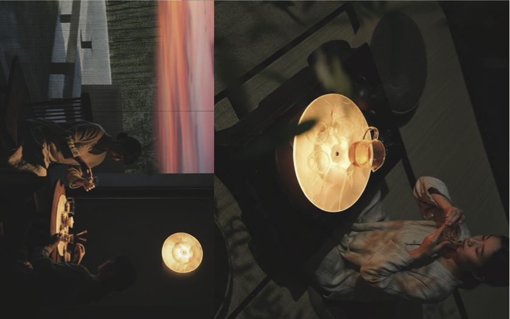
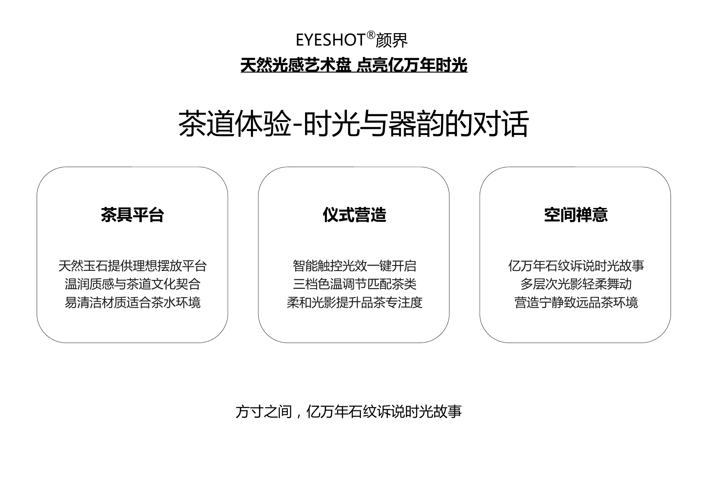

Art Tray Series
茶盘系列
以小尺度呈现热熔天然石的温润光感，适合茶席、接待陈设与客户礼赠。 A compact luminous object for tea rituals, reception settings and premium gifting.
方寸之间，让客户先摸到光。
天然光感艺术盘是最适合私发和线下沟通的小尺度入口：茶席、陈设、礼赠和品牌样板都能快速建立材料记忆。A compact object for tea rituals, display and premium gifting.
Light三档色温
Control触控调光
LifeLED 灯条 50000h
Use茶席、案头、挂墙

体验用可触摸的小件，让客户先感知材料的光感与温度。
场景适合茶室、样板间、接待台、礼赠与品牌展示。
深化可沟通尺寸、光源、石纹方向与包装方式。

资料摘要
保留原 PDF 信息作为参数和话术参考，主视觉以茶席场景为先，避免客户进入后只看到文字页。